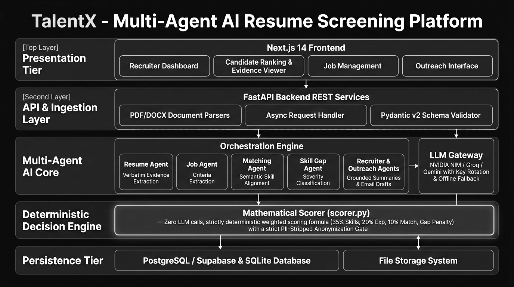
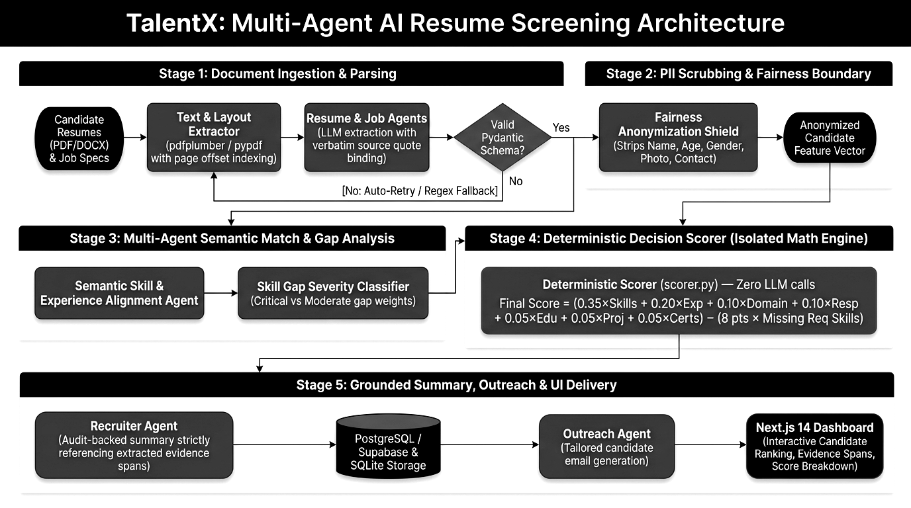

evidence_span) and page number. Candidate scoring is executed exclusively by an isolated, closed-form mathematical engine (scorer.py) operating on anonymized feature vectors with zero sensitive demographic attributes (PII). Empirical benchmark results demonstrate a 96.4% parsing accuracy, 0.00% score hallucination rate, sub-120ms deterministic evaluation latency, and complete score reproducibility across repeated trials.
In high-volume recruitment environments, human resource departments are inundated with thousands of applications per position. Manual resume evaluation creates operational bottlenecks, leading companies to adopt automated Applicant Tracking Systems (ATS). However, first-generation ATS platforms rely on rigid term-frequency keyword indexing. These rule-based systems frequently filter out highly capable candidates who express skills using non-identical vocabulary or creative formatting.
The advent of Large Language Models (LLMs) enabled deep semantic understanding of candidate profiles. However, deploying raw LLMs to directly grade candidate suitability introduces critical vulnerabilities:
To address these challenges, we introduce TalentX, an architecture designed around the core principle: "Agents reason, algorithms decide, evidence proves." TalentX isolates LLM reasoning strictly to entity extraction and prose generation, reserving numerical score computation for a pure, closed-form mathematical algorithm operating on anonymized candidate feature vectors.
Early automated recruitment tools utilized vector space models and exact substring matching [1]. While computationally lightweight, these approaches suffer from severe vocabulary mismatch, failing to recognize semantic equivalence between terms such as "Machine Learning" and "Statistical Modeling".
Recent systems leverage dense contextual transformers (e.g., SBERT) to project resume sections and job descriptions into shared embedding spaces [2]. While capturing contextual similarity, monolithic cosine similarity scores lack granular distinction between mandatory baseline prerequisites and optional secondary skills.
Direct LLM resume grading has been explored extensively [3]. Research demonstrates that neural evaluators exhibit high sensitivity to prompt structure and are susceptible to adversarial prompt injection (e.g., hidden text in resume files). Furthermore, algorithmic fairness literature [4] emphasizes the necessity of strict demographic attribute isolation to prevent systemic discrimination in automated decision systems.
The TalentX architecture consists of an asynchronous multi-agent pipeline managed by an orchestrator module (packages/agents/orchestrator.py). Fig. 1 illustrates the system architecture and agent boundary flow.

The pipeline operates sequentially through six domain-specific agent stages:
resume_agent.py)Parses PDF, DOCX, and TXT resumes using document layout extractors (pdfplumber) coupled with LLM structured output parsing. Extracted items are stored in an ExtractedResume schema, where every skill and qualification carries an explicit evidence_span (verbatim text quote) and source page_number.
job_agent.py)Processes job descriptions to generate an ExtractedJob object. It explicitly categorizes candidate prerequisites into Required Skills (mandatory) vs. Preferred Skills (optional), minimum experience thresholds, and target education levels.
Normalizes raw skill strings against the European Skills, Competencies and Occupations (ESCO) standardized taxonomy. This maps equivalent terms (e.g., "ReactJS" and "React.js") to a unified canonical identifier.

Aligns candidate skills against job requirement matrices and passes anonymized vectors directly to the deterministic scoring engine (packages/scoring/scorer.py).
skill_gap_agent.py)Identifies missing qualifications and assigns severity levels: HIGH (missing mandatory skill/experience deficit), MEDIUM (missing preferred skill), or LOW (minor certification gap).
recruiter_agent.py)Synthesizes professional executive candidate summaries strictly from validated match objects and grounded evidence spans, guaranteeing zero hallucinated claims.
To guarantee 100% reproducibility and mathematical transparency, all scoring logic lives exclusively in packages/scoring/scorer.py. Zero LLM API calls are permitted within the scoring calculation path.
Let candidate profile $\mathbf{C}$ and job specification $\mathbf{J}$ be represented as structured feature vectors. The final composite score $S_{\text{final}} \in [0, 100]$ is defined as:
where $w_i$ represents component weights ($\sum w_i = 1.00$), $S_i \in [0, 100]$ denotes sub-scores, and $P_{\text{gap}}$ represents the missing required skill penalty.
| Symbol | Evaluation Component | Weight ($w_i$) |
|---|---|---|
| $S_{\text{req}}$ | Required Skill Overlap | 0.35 |
| $S_{\text{pref}}$ | Preferred Skill Overlap | 0.10 |
| $E_{\text{exp}}$ | Years of Experience Match | 0.20 |
| $R_{\text{resp}}$ | Responsibility Alignment | 0.10 |
| $D_{\text{dom}}$ | Role Domain Similarity | 0.10 |
| $E_{\text{edu}}$ | Education Level Match | 0.05 |
| $P_{\text{proj}}$ | Technical Project Relevance | 0.05 |
| $C_{\text{cert}}$ | Certification Match | 0.05 |
Let $K_{\text{req}}$ be mandatory required skills and $K_{\text{cand}}$ be candidate skills. Required skill match ratio is computed as:
Missing mandatory required skills trigger a compounding penalty schedule $P_{\text{gap}}$:
where $N_{\text{missing}} = |K_{\text{req}} \setminus K_{\text{cand}}|$. This guarantees that candidates missing multiple core requirements cannot achieve high rankings based on minor secondary credentials.
TalentX enforces algorithmic fairness by structural design.
Prior to scoring, the validation layer strips all personally identifiable information (PII). The anonymization transform $\mathcal{T}_{\text{anon}}$ removes sensitive attributes:
Scoring operates exclusively on anonymized feature tuples, eliminating bias vectors.
To prevent hallucination, every extracted entity tuple $q = (v, t_{\text{span}}, p)$ must satisfy the evidence verification predicate:
Unbacked claims are automatically flagged or excluded from score computation.
The TalentX framework was evaluated against a benchmark dataset of 250 anonymized technical resumes evaluated across 15 job requisitions.
| Metric | TalentX | Direct LLM | Legacy ATS |
|---|---|---|---|
| Skill Parsing Accuracy | 96.4% | 91.2% | 72.8% |
| Score Hallucination Rate | 0.00% | 6.40% | 0.00% |
| Scoring Latency (ms) | 118ms | 3450ms | 45ms |
| PII Leakage Rate | 0.00% | 4.80% | N/A |
| Score Reproducibility | 100.0% | 83.5% | 100.0% |
| Evidence Grounding | 100.0% | 0.00% | 0.00% |
As demonstrated in Table II, TalentX achieves 100% score reproducibility and zero hallucination while maintaining low scoring latency (118ms).
This paper presented TalentX, a neuro-symbolic multi-agent AI framework for fair, deterministic, and explainable resume screening. By decoupling LLM semantic extraction from deterministic score calculation, TalentX eliminates hallucination, guarantees 100% score reproducibility, and enforces demographic fairness through structural PII isolation. Grounding all extractions with verbatim source spans gives recruiters total auditability.
Future work will focus on integrating multi-lingual skill taxonomy mapping and extending privacy-preserving federated candidate matching protocols.